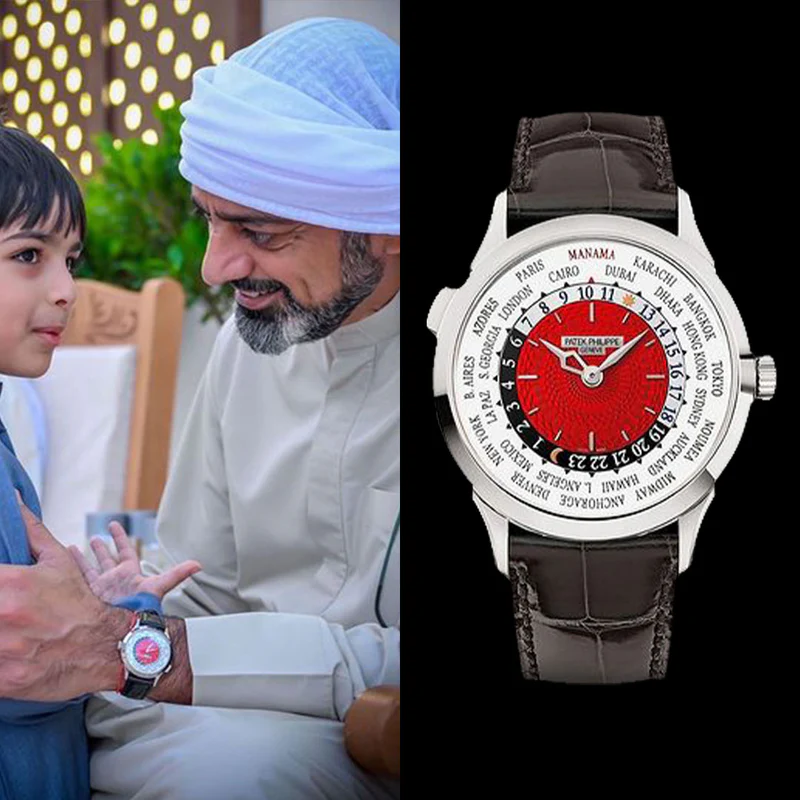
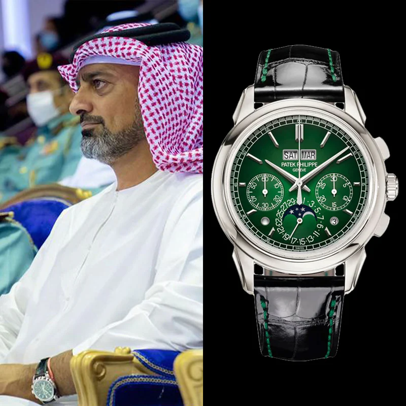

Six Decades of Collecting
Every dated piece in the collection, arranged along the river of time.
1960s
Where the legend begins — the first Daytonas.
 1963
1963
Rolex Daytona 6239 Paul Newman
Rolex · 6239 Paul Newman 1969
1969
Rolex Daytona Reference 6264
Rolex · 6264 1969
1969
Rolex GMT-Master 'Pepsi' 1675
Rolex · 1675 'Pepsi' GMT-Master1970s
The exotic-dial era.
1972Rolex Daytona 6241 'John Player Special'
Rolex · 6241 John Player Special1980s
The last of the manual-wind Daytonas.
 1984
1984
Rolex Daytona 6263 'Quraysh'
Rolex · 6263 Quraysh 1987
1987
Rolex Daytona 'Paul Newman' Reference 6265
Rolex · 6265 Paul Newman1990s
Precious metal enters the chronograph.
1993Rolex Daytona White Gold 16519
Rolex · 16519 White Gold2000s
The age of the independents.
 2000
2000
F.P. Journe Chronomètre à Résonance
F.P. Journe · Chronomètre à Résonance2010s
Grand complications and modern grails.
 2015
2015
F.P. Journe Tourbillon Souverain Bleu
F.P. Journe · Tourbillon Souverain Bleu 2015
2015
Patek Philippe Split-Seconds Chronograph 5959P
Patek Philippe · 5959P-001 2016
2016
Richard Mille RM 26-02 Tourbillon Evil Eye
Richard Mille · RM 26-02 2016
2016
H. Moser & Cie Perpetual Calendar Funky Blue
H. Moser & Cie · 6200-0408 2019
2019
Audemars Piguet Royal Oak Perpetual Calendar 26579CS Blue Ceramic
Audemars Piguet · 26579CS-OO-1225CS-01 2019
2019
Artisans de Geneve 'La Montoya' Custom Rolex
Artisans de Geneve · La Montoya Custom2020s
The collection’s newest chapters.
 2020
2020
Patek Philippe Calatrava 5326G Annual Calendar
Patek Philippe · 5326G-001 2020
2020
Richard Mille RM 65-01 Automatic Winding Split-Seconds Chronograph
Richard Mille · RM 65-01 2020
2020
Richard Mille RM 68-01 Cyril Kongo
Richard Mille · RM 68-01 Cyril Kongo 2020
2020
Audemars Piguet Royal Oak Salmon Dial Tourbillon
Audemars Piguet · 26522OR-OO-1220OR-01 2020Rolex Daytona AET Remould Custom
Rolex · 16610LV 'Kermit' AET 2021
2021
Patek Philippe 5470P Chronograph
Patek Philippe · 5470P-001 2021
2021
Patek Philippe Nautilus 5711/1300A Olive Green Diamond
Patek Philippe · 5711/1300A-001 2021
2021
Richard Mille RM 67-02 Alexis Pinturault
Richard Mille · RM 67-02 Alexis Pinturault 2021
2021
Audemars Piguet Royal Oak Jumbo Extra-Thin 15202BC White Gold
Audemars Piguet · 15202BC-OO-A099V-01 2021Audemars Piguet Royal Oak Jumbo 'White' Extra-Thin
Audemars Piguet · 15202ST-OZ-1240ST-01 2021Rolex GMT-Master II 'Pepsi' Meteorite Dial
Rolex · 116719BLRO 'Pepsi' GMT-Master II Meteorite 2022Patek Philippe Calatrava 6007A-001
Patek Philippe · 6007A-001
2022Patek Philippe World Time 5527G Manama
Patek Philippe · 5527G-001 2022
2022
Audemars Piguet Royal Oak Chronograph Ice Blue Dial
Audemars Piguet · 26354ST-OO-1220ST-02
2023Patek Philippe Nautilus Perpetual Calendar Green 5212A
Patek Philippe · 5212A-001 2024
2024